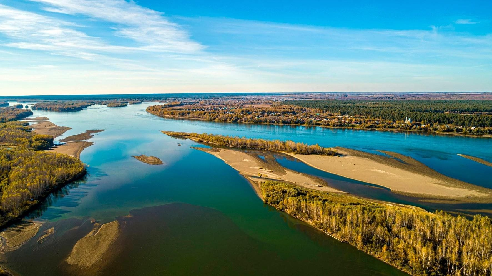
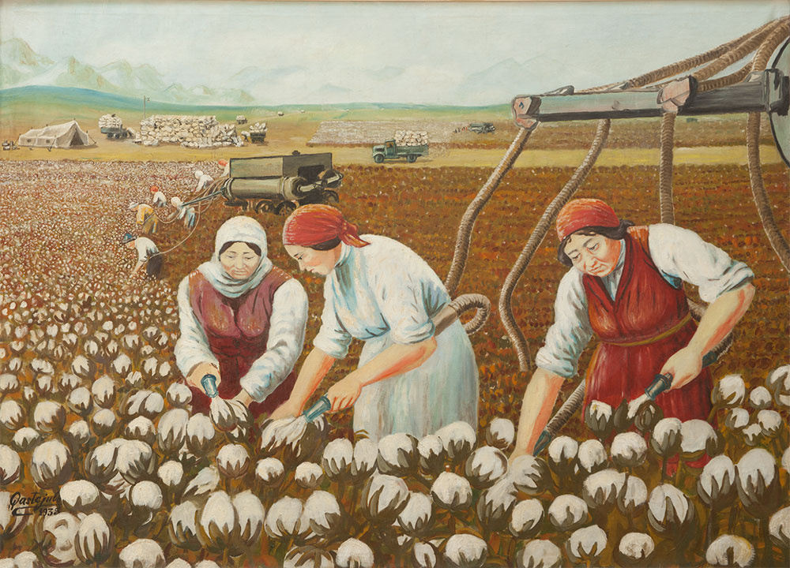

О проекте
Цель: Распространение краеведческих знаний о природе, культуре и историческом наследии Обь-Иртышского бассейна.
Задачи: Изучить наследие, выбрать объекты для туризма, способствовать формированию активной гражданской позиции.
Вопросы: Что даёт знание родного края? Как сохранить память для будущих поколений?
Направления работы
Природа
Уникальные природные объекты, ландшафты и экотуризм.
Культура
Народные традиции, фольклор, промыслы и языки.
Наследие
Памятники архитектуры, архивы, историческая среда.
Медиатека
Здесь представлены аудиозаписи и изображения, собранные участниками проекта.

Река Обь
Описание природного объекта.

Народные традиции
Аудиозапись фольклора или интервью.